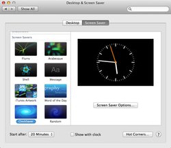
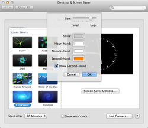

ClockSaver Logo
ClockSaver
ClockSaver is a port of the Screensaver-module "KClock" found in the KDE Desktop Environment to Mac OS X. It shows a simple but elegant analog clock where you can customize the colors for the clock hands, the color for the clock scale, whether a second hand should be visible, and the size of the displayed clock.
Screenshots
ClockSaver in System Preferences.app

ClockSaver's Configuration Panel
Download
The latest version 2.0.0 (released august 2012) is ready for Moutain Lion.
Download the precompiled Screensaver from GitHub

Alternatively you can grab the sourcecode of the project as a zip or tar package:

License
ClockSaver is published under the GNU General Public License Version 2.
User Comments
"Terrific. A true classic of design simplicity. As it's meant to be! Love it."
(David Brennan)